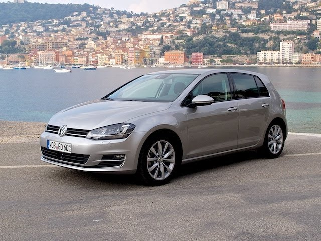
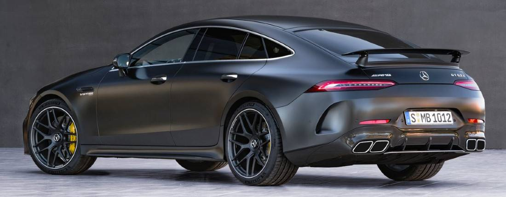

Welkom bij CarKeuze
Wat leuk dat je hier bent! Op deze site deel ik mijn favoriete auto's in
verschillende prijsklassen en vertel ik welke ik het mooiste vind.
Natuurlijk ben ik benieuwd naar jouw mening: misschien zie jij het
anders, en dat hoor ik graag! Veel plezier met kijken en laat gerust van
je horen.
Onder €10.000
Mijn keuze zou een Volkswagen Golf zijn. Deze auto staat bekend om zijn
betrouwbaarheid, lage onderhoudskosten en het rijplezier dat hij biedt.

Onder €20.000
Voor 20.000 zou ik kiezen voor de Golf GTI: mooi sportief en snel, met
een krachtige motor en een strak design. De GTI staat bekend om zijn
uitstekende wegligging en rijplezier, waardoor elke rit bijzonder wordt.
Daarnaast biedt hij voldoende comfort en moderne technologie, zodat je
niet alleen snel, maar ook veilig en comfortabel onderweg bent. Een
ideale keuze voor wie van sportiviteit houdt zonder concessies te doen
aan dagelijks gebruik.


Onder €100.000

Boven €100.000
In de prijsklasse boven €100.000 kies ik voor de Mercedes-AMG GT 63.
Deze auto is een perfecte mix van luxe, kracht en sportiviteit. Met zijn
indrukwekkende V8-motor levert hij uitzonderlijke prestaties en een
unieke rijervaring. Het design is zowel elegant als agressief, en het
interieur biedt ultiem comfort en geavanceerde technologie. De GT 63 is
ideaal voor wie op zoek is naar een exclusieve auto die zowel op het
circuit als op de openbare weg uitblinkt.
